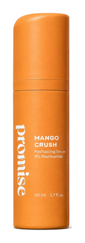
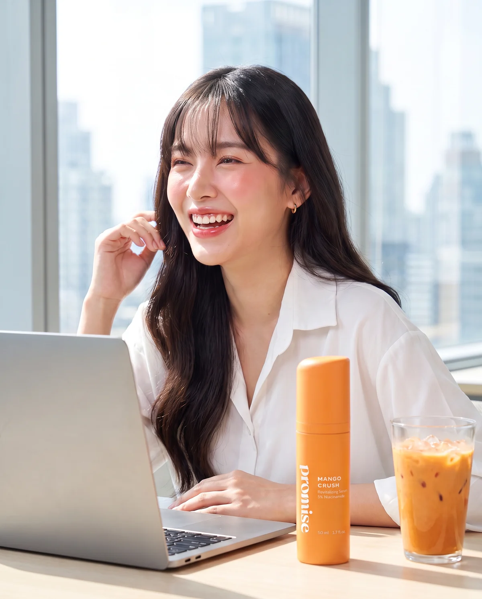
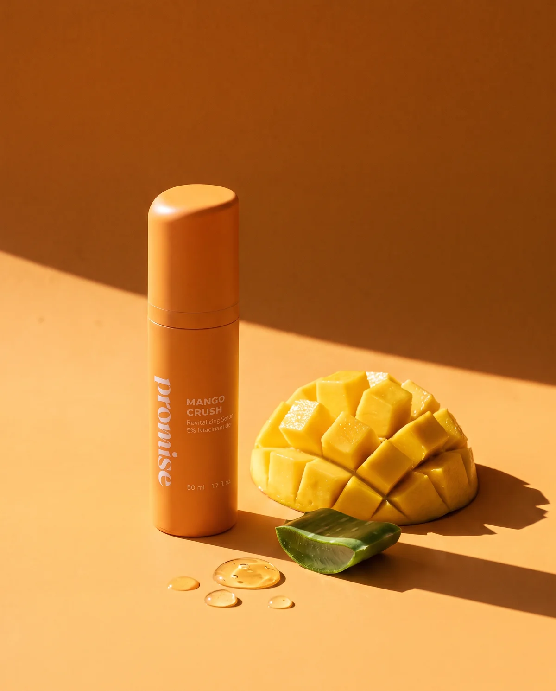
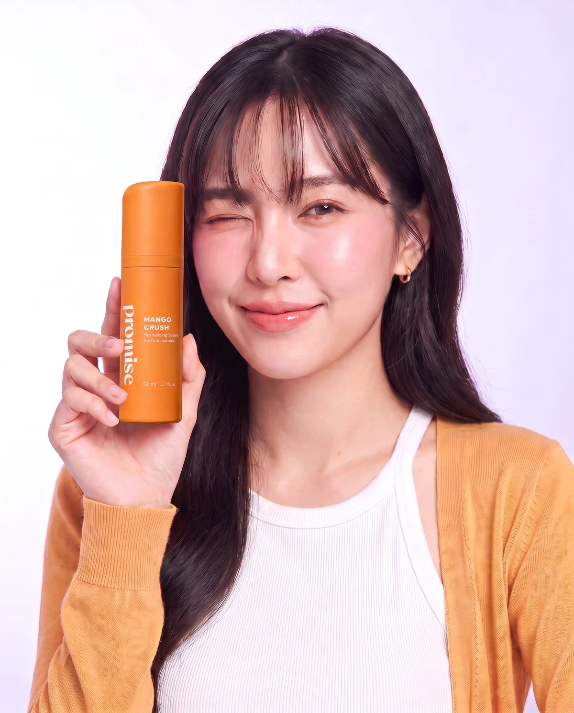
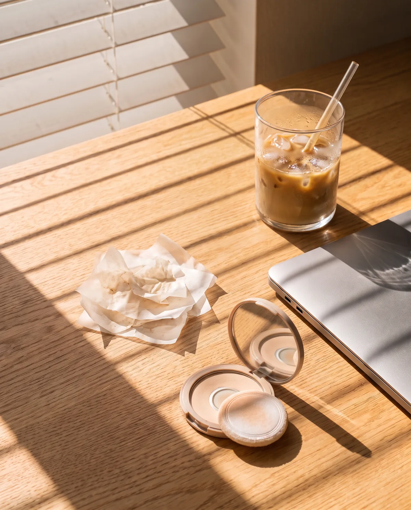
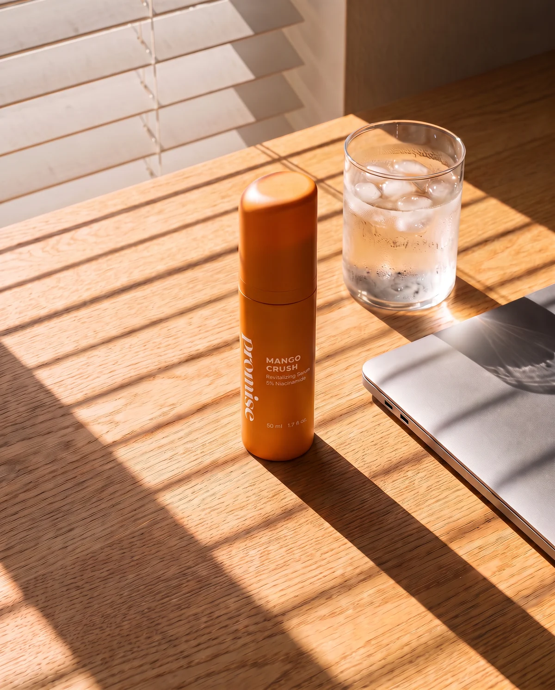
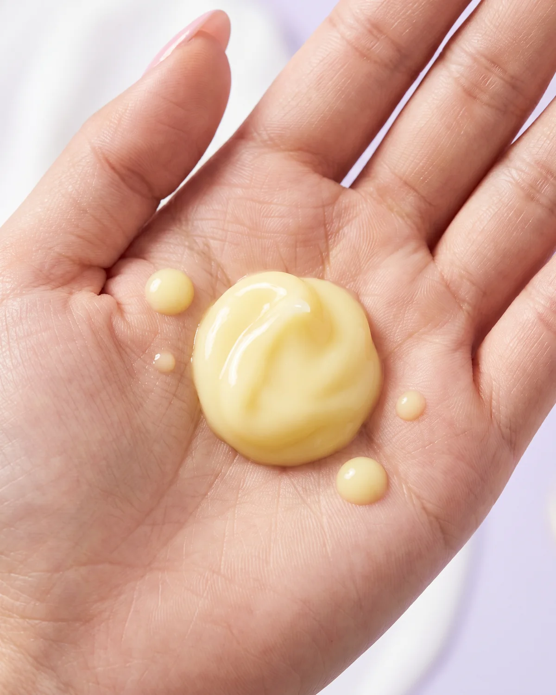

B35%
mango crush
ผิวดูมันน้อยลง รูขุมขน แลดูกระชับLess shine, tighter-looking pores เนื้อเจลบางเบา ซึมไว ไม่ เหนอะหนะ Light gel that sinks in fast, never sticky Aquaxyl™ ช่วยกักเก็บ ความชุ่มชื้น Aquaxyl™ helps skin hold on to moisture วีแกน · ไม่ทดลองในสัตว์ · ใช้ได้ขณะ ตั้งครรภ์ Vegan · cruelty-free · pregnancy-safe

฿990฿1,690
เซรั่มประจำวันของผิวมัน The everyday oil-control serum
ส่วนผสมหลัก Key ingredients
วิธีใช้ How to use
การจัดส่ง + Pinky Promise Shipping + Pinky Promise
ฉ่ำ ไม่มัน
ตั้งแต่เช้ายันค่ำ glow, not grease.
from 7am to 10pm.
ตั้งแต่เช้ายันค่ำ
from 7am to 10pm.

เจลบางเบาเพื่อผิวฉ่ำโกลว์ + ไม่เหนอะหนะ A light gel for a GLOWY look + NON-STICKY skin.
เหมาะกับ Good for ผิวธรรมดา ผิวผสม ผิวมัน Normal, combination, oily skin สัมผัส Feels like ซอร์เบต์มะม่วง แช่เย็น ซึมไวA chilled mango sorbet that sinks in fast ลุค Looks like ผิวดูใส ฉ่ำ ไม่มันเยิ้ม Clear, dewy, never greasy กลิ่น Smells like มะม่วงอ่อนๆ Soft fresh mango - FYI
วีแกน · ไม่ทดลองในสัตว์ · ใช้ได้ขณะ ตั้งครรภ์ Vegan · cruelty-free · pregnancy-safe

niacinamide PC
Aquaxyl™·

<3 mango crush
ฮีโร่ประจำวันของผิวมัน Your everyday hero for oily skin.
ผิวดูมันน้อยลง Less shine รูขุมขน แลดูกระชับTighter-looking pores ชุ่มชื้น ไม่ตึง Hydrated, not tight ผิวแลดู กระจ่างใส Brighter-looking skin ผิวดูเรียบเนียน Smoother-looking skin เนื้อเจล ไม่เหนอะ Light, non-sticky gel
ส่วนผสมฮีโร่ Hero ingredients
Aq
Aquaxyl™
🥭
สารสกัดมะม่วง + ว่านหางจระเข้ Mango extract + aloe vera
คุมมันแบบที่ผิวรู้สึกดี Oil control that actually feels good on your skin.
| Mango Crush | ||
|---|---|---|
| ✓ | ||
| ✓ | ||
| ✓ | ||
| ✓ | ✕ | |
| ✓ |



รูทีนกับ mango crush get ready with mango crush
Mango Crush
Pinky Promise
คำถามเกี่ยวกับ Mango Crush Your Mango Crush questions, answered.
ต้องจ่ายตอนนี้ไหม Do I pay now?
จะได้รับของเมื่อไหร่ When will I get it?
ทำไมราคา ฿990 Why ฿990?
ผิวแพ้ง่ายใช้ได้ไหม Can sensitive skin use it?
ใช้ตรงไหนในรูทีน Where does it go in my routine?
เบอร์โทรของฉันจะถูกใช้ทำอะไร What happens to my number?
จองไว้ก่อน
วันนี้ reserve
yours today.
วันนี้
yours today.